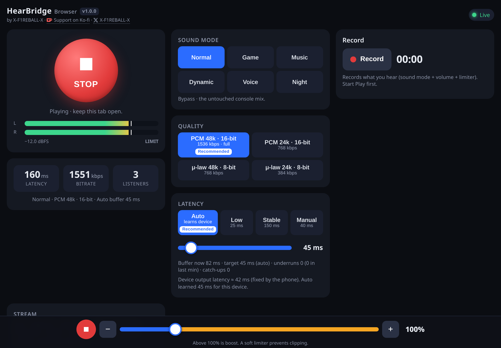
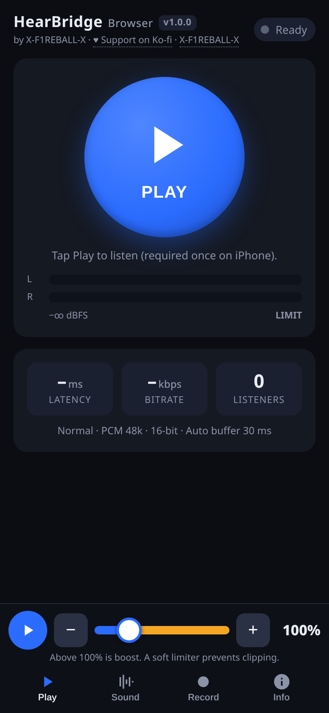
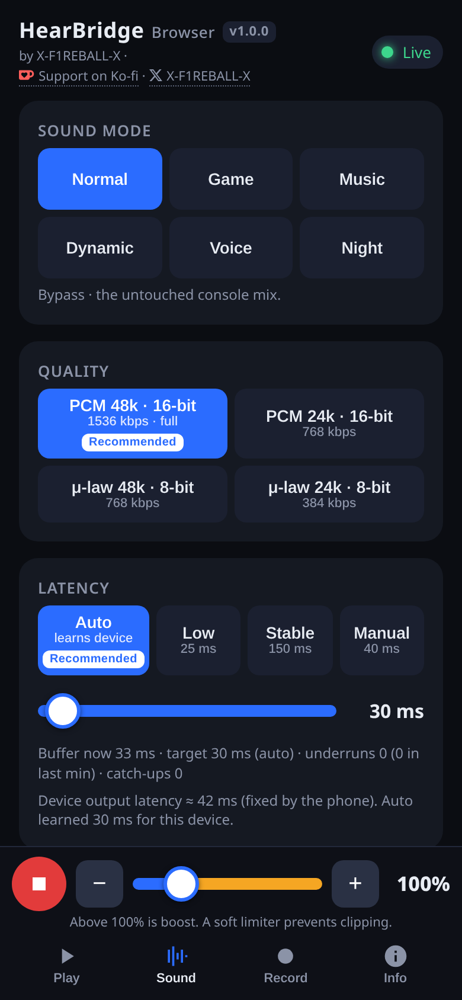
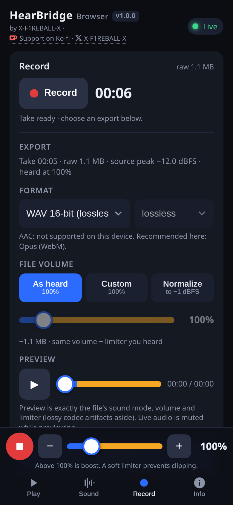
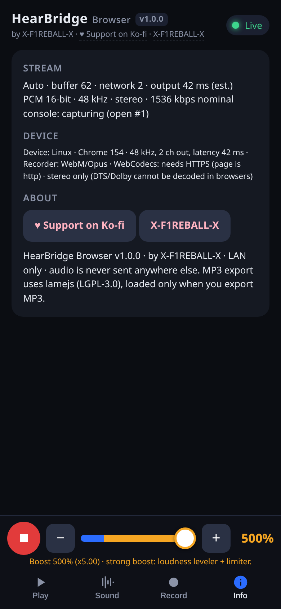

HearBridge Browser is a payload for a jailbroken PS5. It captures the console's audio and serves it on your local network together with a player page. Open the page on your phone, tablet or PC, tap Play, and you hear the game. No Bluetooth and no extra hardware.
Free and open source under GPL-3.0-or-later. Developed by X-F1REBALL-X.

What it is
A small ELF that runs on the console and serves the player at http://<console-ip>:8096/. The audio is sent as plain 16-bit, 48 kHz stereo PCM, straight from the console to your device. Nothing leaves your network.
Any browser
Chrome, Firefox, Edge and Safari, including iPhone and iPad. There is also an Android app that finds the console by itself, and a portable Windows app.
Volume up to 500%
Anything above 100% is boost. A soft limiter keeps loud scenes from clipping or distorting.
Sound modes
Normal, Game, Music, Dynamic, Voice and Night. Each one is a different tuning of the same stream, applied on your device.
Low latency
The Auto buffer learns the lowest delay your device can handle without dropouts. Low, Stable and Manual are there too.
Record and export
Record what you hear, preview it, and save it as WAV, FLAC, MP3 or Opus.
Several listeners
More than one person can listen at the same time, each with their own quality and buffer settings.
Install
You need a jailbroken PS5 with an ELF loader listening on port 9021 (elfldr, or Elf Launcher which starts it for you), and a phone, tablet or computer on the same network as the console.
Jailbreak the consoleUse your usual exploit (for example WK Autoloader) and make sure elfldr is running on port 9021.
Load the payloadWith Elf Launcher: find HearBridge Browser in the payload list, open it and press Payload. That is the one-press way.Without it: send hearbridge-browser-1.0.0.elf from the release to port 9021 with any payload sender, or from a PC:
Wait for the notificationThe PS5 shows a notification when HearBridge Browser is running. It now serves the player on port 8096.
Open the playerOn your device, open http://<console-ip>:8096, or use the Android or Windows app. Tap Play.
Good to know: the payload keeps running until you stop it or turn off the console. Sending it again replaces the running copy, so updating is just a matter of sending the new ELF.
Open it
Three ways to listen. They all play the same page from the console, so the features are the same everywhere.
In a browser
Type http://<console-ip>:8096 in the address bar. You find the console IP on the PS5 under Settings, Network, Connection Status.
On iPhone and iPad the first Play has to be a tap. That is an iOS rule, after that it plays like anywhere else.
Android app
Install HearBridge-Browser-1.0.0.apk. It scans your network, tries the last console first and lists every console it finds. Pick yours, or type the IP by hand.
Audio keeps playing with the screen off or the app in the background, and recordings you export land in Downloads.
Windows app
Run HearBridge-Browser-1.0.0-windows-x64.exe. It is portable, so there is nothing to install. It opens the player in its own window.
Needs Windows 10 or 11 (x64) with WebView2, which is already part of Windows 11 and current Windows 10. The exe is not signed, so SmartScreen may warn you once: click More info, then Run anyway. If it can't reach the console, type the IP and press Retry. It remembers the last one that worked.
Media players:http://<console-ip>:8096/live.wav also works in VLC or ffplay, if you prefer one of those.
Using it
On a phone the page has four tabs, with the mini player always at the bottom: Play and Stop, the volume slider from 0 to 500%, and the minus and plus buttons. On a tablet or desktop everything is on one screen. Your choices are saved per device.

Play
The big button starts and stops the stream. Under it are the L and R level meters, which show LIMIT when the limiter is working.
Latency: the total delay from the console to your ears, in milliseconds.
Bitrate: how much data the stream uses right now.
Listeners: how many devices are listening at the moment.
The line below the stats sums up what is active: sound mode, quality and buffer.

Sound
Sound mode
Normal: the untouched console mix.
Game: brings footsteps and cues forward, with a slight low cut.
Music: a gentle bass and treble lift.
Dynamic: wider and punchier, with light compression.
Voice: clearer dialogue, less bass.
Night: a strong leveler, so loud and quiet scenes even out.
Quality: PCM 48k is the full stream (about 1.5 Mbps). PCM 24k uses half of that. The μ-law options are lighter still, for weak Wi-Fi. The page marks the one it recommends for your device.
Latency: Auto learns your device, Low aims for about 25 ms, Stable keeps a 150 ms cushion, and Manual lets you set the buffer with the slider. Underruns and catch-ups are counted live under the slider.

Record
Start Play first, then press Record. It records what you hear, with the sound mode, volume and limiter included. Press it again to stop.
Format: WAV 16-bit, FLAC, MP3 or Opus. Formats your device can't make are marked, and the page tells you which one it recommends.
File volume: As heard keeps the level you listened at, Custom sets your own, and Normalize brings the peak to -1 dBFS.
Preview: plays the file exactly as it will be saved. Live audio is muted while the preview plays.

Info
Connection details: the buffer, the network and output delay, the stream format, and whether the console is capturing.
Under Device you see what your browser supports: the output sample rate and channels, which recording formats work, and a reminder that Dolby and DTS can't be decoded in a browser. This is what the page uses to pick its recommended settings.
About has the version and the Ko-fi and X links.
Tips
Two settings make most of the difference: the console's audio format, and how your device is connected.
Console audio output
Browsers can't decode Dolby or DTS, so HearBridge sends plain stereo. If you hear nothing, or only some sounds, set the PS5 to Linear PCM:
Settings, Sound, Audio Output.
Set Audio Format (Priority) to Linear PCM.
If the console is set to a surround output, switching to a stereo output also works.
Lower latency
Leave the buffer on Auto for a few minutes. It starts safe and works its way down.
Put the console on Ethernet if you can. Then only your device is on Wi-Fi.
Use 5 GHz Wi-Fi on your device, close to the router.
Wired headphones are faster than Bluetooth ones. Bluetooth adds its own delay on top, and the page can't remove it.
If you hear crackles or gaps, choose Stable, or try PCM 24k or μ-law to use less bandwidth.
Volume boost
Use the boost for quiet games or small phone speakers. The limiter keeps it from clipping, and the LIMIT mark on the meters shows when it is working.
Night mode is often better than extra boost for late play, since it lifts quiet parts without making loud ones louder.
iPhone and iPad
Check the silent switch and the volume buttons. HearBridge asks iOS to play in silent mode, but some iOS versions still mute the browser while the switch is on.
If a call or Siri interrupts the audio, tap "Tap to resume audio".
FAQ
The questions that come up most.
Do I need Bluetooth or extra hardware?
No. Everything goes over your normal Wi-Fi or Ethernet network.
Does my audio go to the internet?
No. It only works on your local network. The console streams straight to your device and the page doesn't load anything from outside.
Why no Dolby or DTS?
Browsers can't decode those streams, so the audio is sent as plain stereo PCM. Set the PS5 audio format to Linear PCM if you hear nothing.
The page doesn't open.
Check that your device is on the same network as the console and that the IP is right. Make sure the payload is running: you should have seen the notification on the PS5. If the console was rebooted, load the payload again.
I hear nothing on my iPhone.
Check the silent switch and the volume. If iOS interrupted the audio, tap "Tap to resume audio".
Can several people listen at once?
Yes. Each device picks its own quality and buffer. The Listeners count on the Play tab shows how many are connected.
Is it the same as HearBridge PS5?
No. HearBridge PS5 sends audio to Bluetooth headphones. HearBridge Browser sends it to a browser on your network. The audio capture code comes from HearBridge PS5.
How do I stop it?
Send a POST to http://<console-ip>:8096/api/stop, or reboot the console.